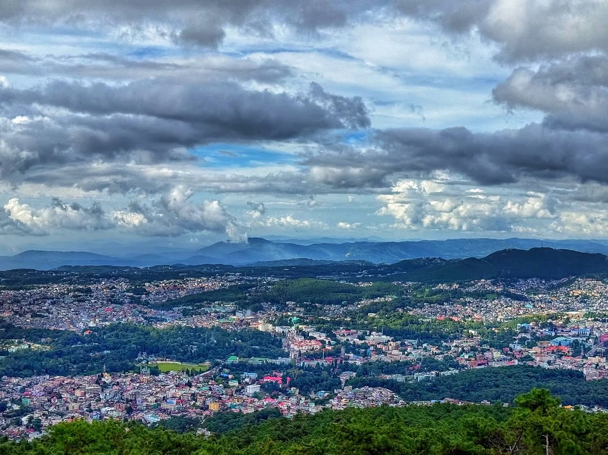
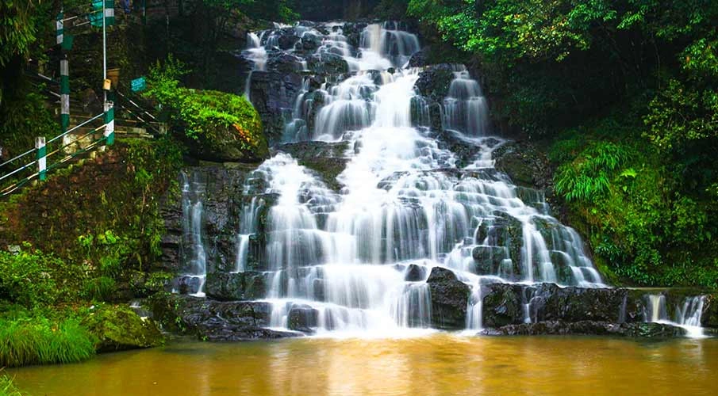
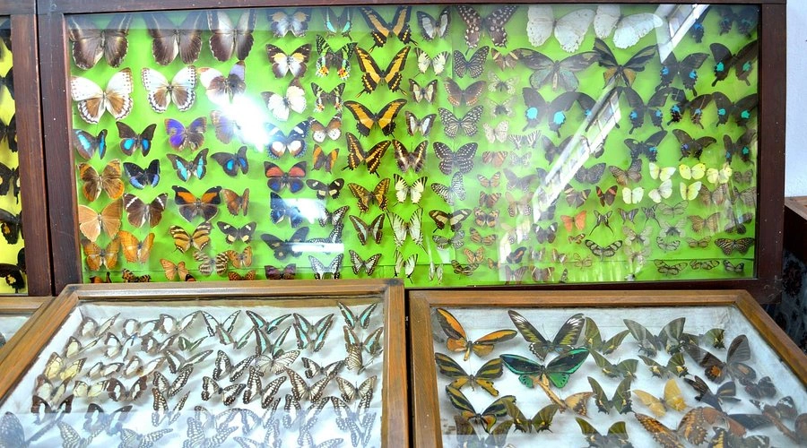
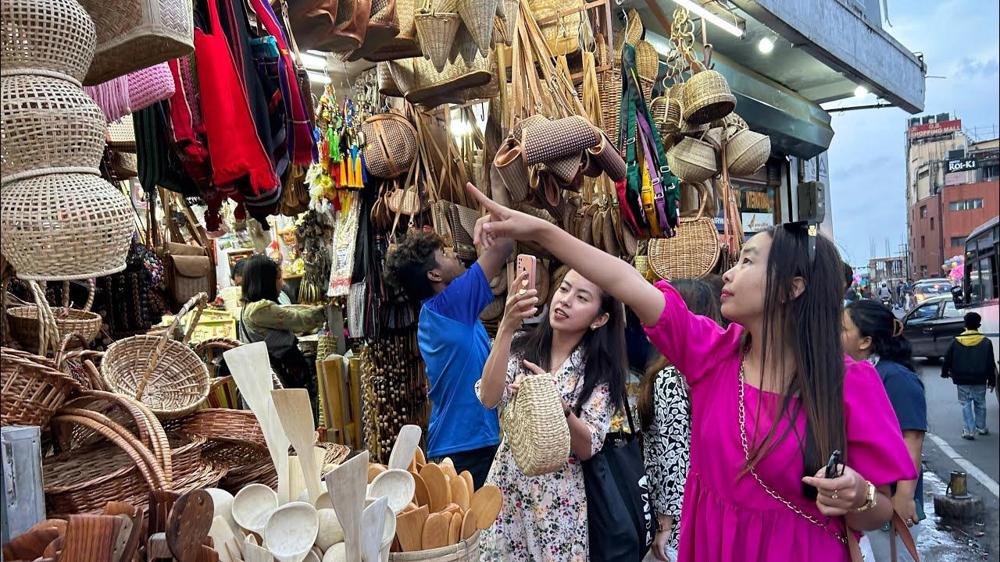
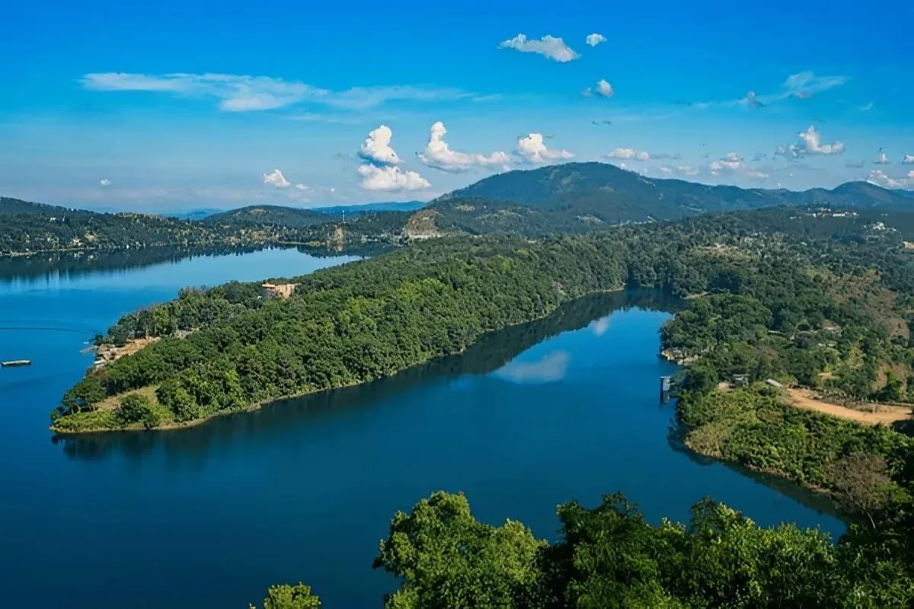
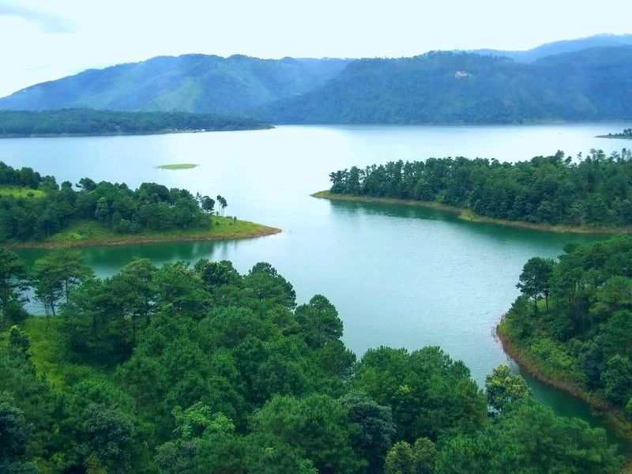

Surrounded by rolling hills, waterfalls, pine forests, lakes, and misty landscapes, Shillong is one of the most beautiful hill stations in Northeast India. Located in the scenic state of Meghalaya, Shillong is often called the “Scotland of the East” because of its lush green hills, cool weather, colonial charm, and breathtaking natural beauty. Shillong is famous for its peaceful atmosphere, vibrant local culture, music scene, waterfalls, scenic viewpoints, and nearby natural wonders. Whether you are planning a honeymoon, family vacation, backpacking trip, road trip, or a relaxing mountain escape, Shillong offers an unforgettable travel experience in the heart of Northeast India.
Why Shillong is Famous Among Tourists



Shillong became an important administrative and educational center during British rule in Northeast India. The British were attracted by its cool climate and scenic landscapes and developed it as a hill station during the colonial era. Before Meghalaya became a separate state in 1972, Shillong served as the capital of undivided Assam. Over time, the city evolved into a major cultural and tourism hub while preserving its Khasi tribal traditions and natural beauty. Shillong is also famous for its musical culture and is often called the “Rock Capital of India” because of its strong live music scene and talented musicians.
Umiam Lake is one of the most scenic attractions near Shillong. Surrounded by green hills and forests, the lake offers breathtaking sunrise and sunset views. Popular activities include:


Shillong Peak is the highest point in Shillong offering panoramic views of the city, surrounding hills, and valleys. The viewpoint is especially beautiful during sunrise and sunset.
Ward's Lake is a peaceful man-made lake surrounded by gardens and walking paths. Travelers often enjoy:
Police Bazaar is the heart of Shillong city and one of the best places for shopping, cafés, street food, and local experiences. Popular shopping items include:
Don Bosco Museum showcases the culture, traditions, history, and lifestyle of Northeast Indian tribes. The museum is considered one of the best cultural museums in Northeast India.
Laitlum Canyons is one of the most breathtaking viewpoints near Shillong. The dramatic cliffs, valleys, clouds, and panoramic landscapes make it a paradise for photographers and trekkers.
8. Rock Garden & Ganga Maya ParkThese scenic attractions near Darjeeling are famous for waterfalls, landscaped gardens, mountain streams, and peaceful natural surroundings.
Shillong is a year-round destination with every season offering a different charm.
Pleasant weather
Ideal for sightseeing and road trips
Perfect for family vacations and honeymoons
Temperature ranges between 15°C to 25°C.
Lush green landscapes
Waterfalls in full flow
Beautiful misty mountain scenery
Shillong and Meghalaya receive heavy rainfall, making the region incredibly scenic during monsoon.
Cool and pleasant weather
Clear skies and scenic views
Perfect for photography and peaceful holidays
Peaceful atmosphere
Winter temperatures may occasionally drop close to freezing in some nearby areas.
Shillong’s cafés and bakeries are also highly popular among travelers.
Shillong is well connected by road from Guwahati and nearby Northeast Indian cities.
The nearest major railway station is Guwahati Railway Station (GHY).
The nearest airport is Shillong Airport, though most travelers use Lokpriya Gopinath Bordoloi International Airport for better connectivity.
Shillong is not just a hill station — it is a complete experience filled with waterfalls, forests, lakes, music, culture, and breathtaking landscapes. The peaceful atmosphere, cool weather, scenic road trips, and warm local hospitality make Shillong one of the most beautiful destinations in Northeast India. Whether you are planning a honeymoon, backpacking trip, family holiday, photography expedition, or a peaceful escape into nature, Shillong offers unforgettable memories in the lap of Meghalaya’s hills.
Wander and Wonder Travels offers professionally curated Northeast India tour packages covering Shillong, Cherrapunji, Dawki, Kaziranga, Tawang, Gangtok, Darjeeling, and beyond.
Why Choose Wander and Wonder Travels?